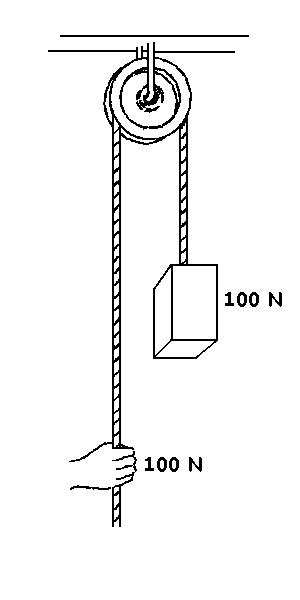
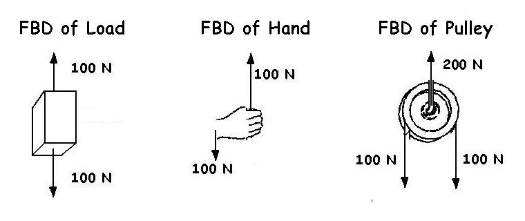
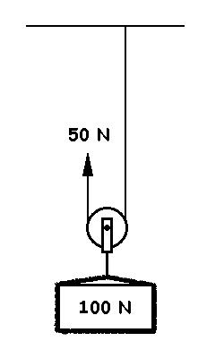
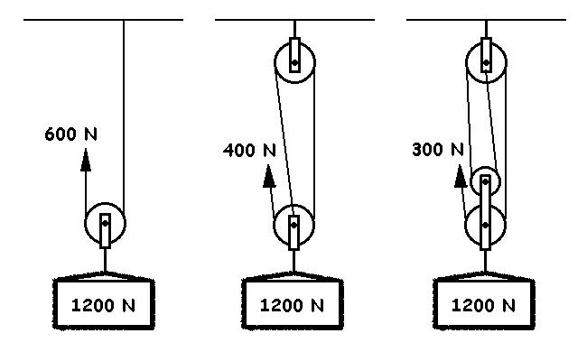
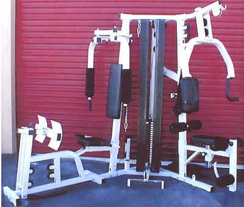
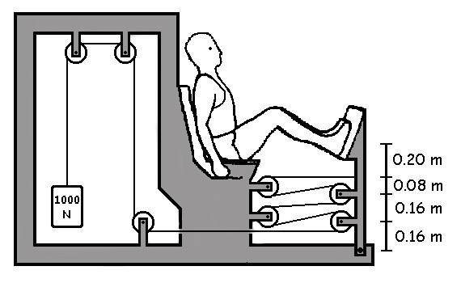
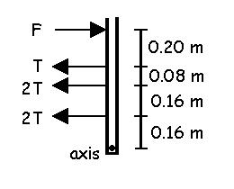
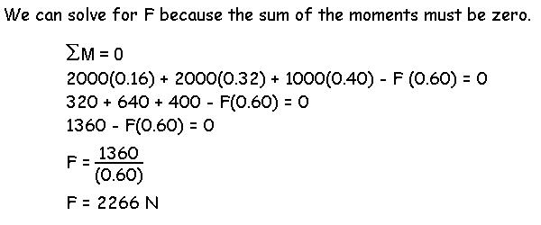
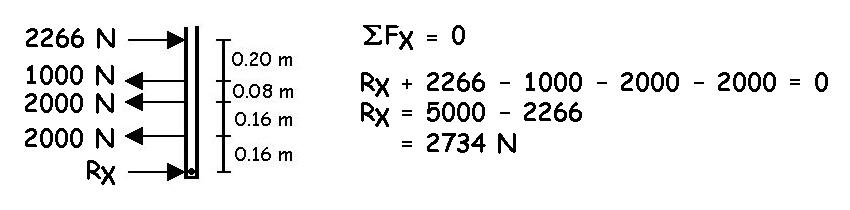

Pulleys, Gears, and Wedges
In the previous lecture, we have seen that a lever is a simple machine that offers a speed or force advantage. This lecture examines three more simple machines that offer speed or force advantages.

Pulleys
A pulley is a groved wheel that changes the direction of force applied by a rope or cable that passes through the groove. We will only consider an ideal pulley (frictionless) in this lecture which means that the tension in the rope is the same on both sides of the pulley.
In the example to the right, a 100 N weight is lifted by pulling down on the rope with 100 N of force. The direction of the force has been changed but there is neither a force or speed advantage. Since the weight pulls downward with 100 N and the hand also pulls downward with 100 N, there must be a 200 N force acting upward on the pulley to keep it attached to the beam (static equilibrium). The diagram below shows the free body diagrams of the load (weight), hand, and pulley.


If the pulley is attached to the load instead of the beam, the force of the hand can be reduced to 50 N to lift the 100 N load. This situation is shown here. The tension in the rope is reduced to 50 N and the hand has a force advantage of two over the load. However, the hand has a speed disadvantage in this situation because it must move through a distance that is twice as long as the distance that the load is lifted.
Below are examples in which pulleys are arranged to achieve force advantages of two, three, and four. Keep in mind that the tension in the cable is always the same on both sides of the pulley so you can calculate the force advantage by counting the number of ropes leading away from the load. The speed advantage is the inverse of the force advantage just like with levers.
Exercise machines use pulleys and cables to change the direction of force and to allow several different exercises to use the same weight stack.

In the case of leg extension, the force can be very large and pulleys can be arranged to allow a strenuous lifting task without much weight. In the example below, calculate the leg extension force required to lift 1000 N.

Solution:
This problem involves both leverage and pulleys. The person applies a force (F) to rotate the lever against the resistance of the tension (T) in the cable. Since the tension in the cable must be equal to the weight in order to lift it (T = 1000 N). The diagram of the lever is shown to the right with the force on each pulley equal to 2T or 2000 N.

What class is the lever in the above example?
If we assume static equilibrium, what is the reaction force at the axis?

Notice the very large forces in this exercise. The feet push with 2266 N, the cable pulls back with 5000N and the reaction at the axis pushes forward with 2734 N. This puts a tremendous bending moment on the lever and it must be strong enough to not break.
The 2266 N force of the feet is the minimum force required. If the lifter were to exert a greater force, the load would accelerate and the tension in the cable would be greater as well as the reaction forces. We will address that situation in the "Dynamic Equilibrium Lecture".